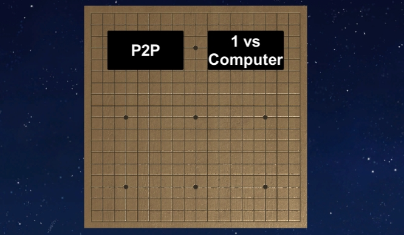
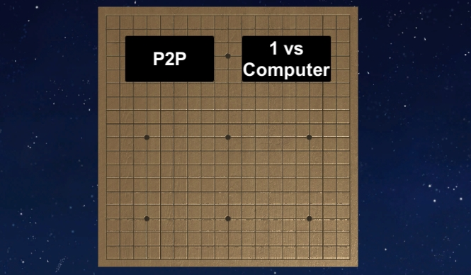
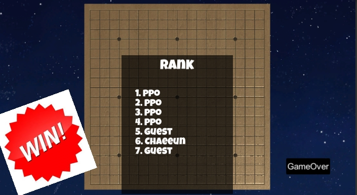
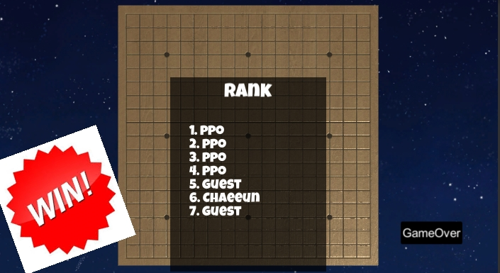

 

이 게임은 unity에 있는 network를 이용해 p2p형식으로 만들었는데, 로고에 Omok 버튼을 누르고 들어오시면 보이는 첫 화면이 사진1이예요.
제 눈에는 HUD화면이 좀 거슬리고 보기에 안 예뻐서 사진에서 보시다시피 HUD화면을 없애고 Host와 Client 버튼을 따로 만들어 게임의 미적 효과를 높였어요.
게임의 로직은 따로 라이브러리를 만들어 관리하고, 따로 SyncVar로 Text를 만들어 자기 턴인지 유무를 알려주었어요. 또, 데이터는 SyncListStruct을 이용하여 결과 까지 한번에 동기화 시켜 공유되게 만들었어요.